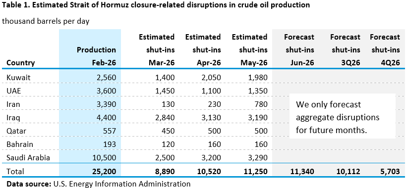
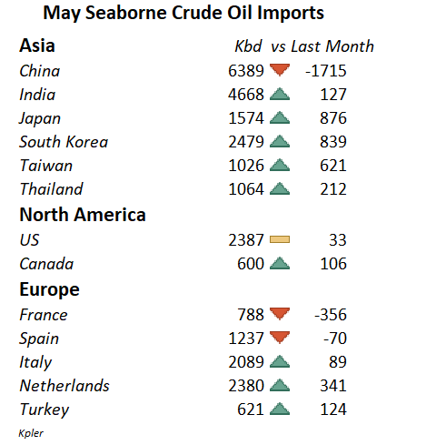
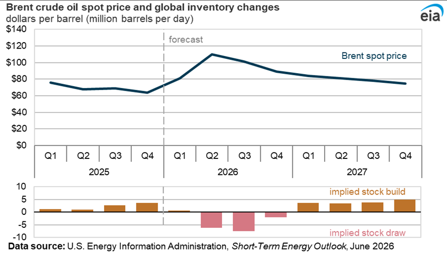
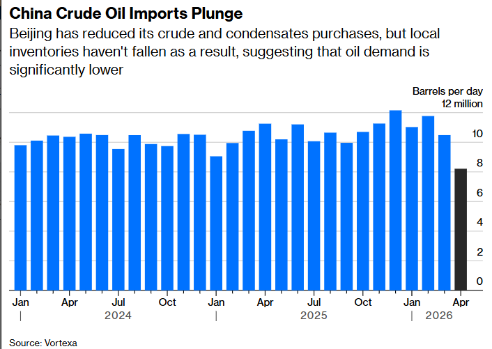
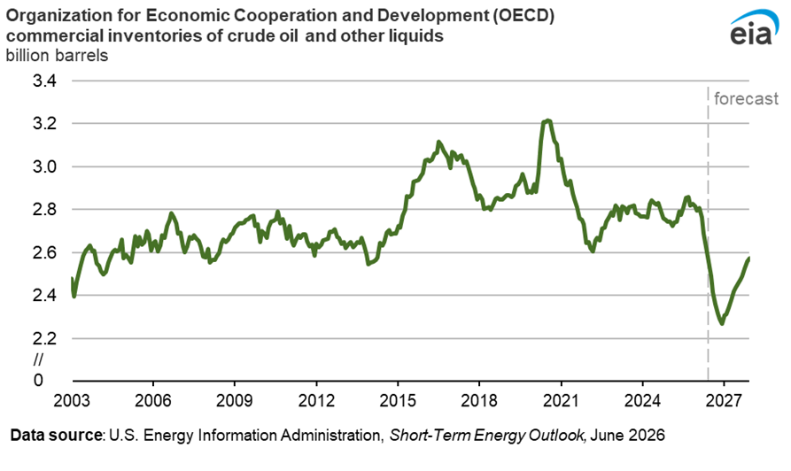
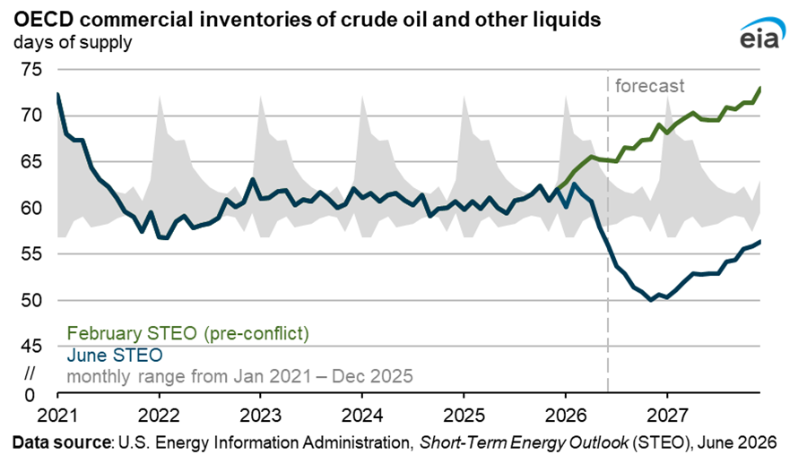
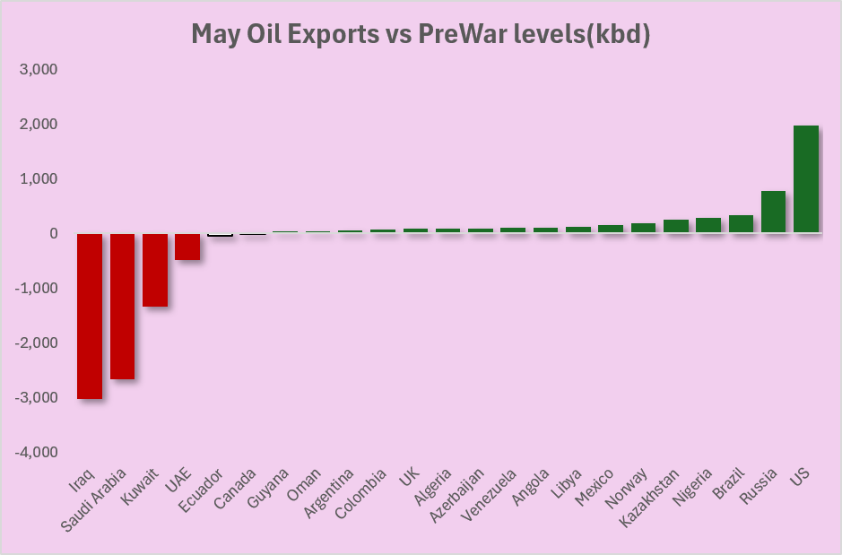

Añade tu tesis, valoración y puntos clave de la empresa aquí.
Kosmos EnergyNYSE: KOSDeepwater E&P · FY2025
Oil-weighted (73%) con LNG en ramp-up · Successful Efforts · Auditor: E&Y · Reservas: Ryder Scott
Fundamentales
Producción
61,400 boepd
Revenue FY25
$1,288M
−23% vs FY24
EBITDAX
$543M
−49% vs FY24
Net Debt/EBITDAX
5.5×
Covenant 3.5× (waiver)
FCF FY25
−$267M
3 años consecutivos neg.
Activos por geografía
Jubilee — Ghana Core ✓
WI 38.6% · Op: Tullow · FPSO · ~26K bopd net · $11.83/Boe lifting · Licencia 2040
GTA LNG — Mauritania/Senegal Crecimiento
WI ~27% · Op: BP · FLNG Gimi · 7,945 boepd · $82.92/Boe ⚠ (ramp-up) · 32-36 cargos 2026E
Gulf of America Diversificación
Múltiples bloques · 17,600 boepd · 84% oil · Tiberius 50% WI (FID H1'26)
Equatorial Guinea En venta
40.4% WI · 7,200 bopd · $53.15/Boe · Venta a Panoro $180M (H1 2026)
Balance & deuda
Vencimientos clave
7.750% Sr. Notes $350MMay 2027 ⚠
7.500% Sr. Notes $400MMar 2028 ⚠
Revolving Facility $1,200MDic 2029
8.750% Sr. Notes $500MOct 2031
Deuda bruta total~$3,100M+
Liquidez disponible~$342M
OCF vs CapEx
OCF FY23$765M
OCF FY24$678M
OCF FY25$134M
FCF negativo 3 años seguidos · necesita OCF >$350M en 2026
Tesis
Bull case
↑GTA: 18.5 → 32-36 cargos 2026
↑Jubilee drilling: +15-20% producción
↑Venta EG: $180M reduce deuda
↑Opex −20% + licencia Ghana 2040
Bear case
↓Brent <$60: margen mínimo ($56.47 all-in)
↓Covenant breach → event of default
↓FLNG Gimi falla → GTA execution risk
↓Refinanciamiento $750M+ en 2027-28
Recomendación: #pendiente NAV — opción leveraged sobre Brent + éxito GTAEV/2P $8/Boe · MSCI AAA · Acción $2.16 (peak $12)
Cartera principal
Portfolio ALS Investment Journal
TWR Acumulado (desde jul 2025)
—
YTD 2026
—
Posiciones
—
TWR Acumulado — ALS
—
Ticker / Empresa
País
Sector
% Cartera
Cost Basis
Precio Actual
Return
Convicción
Posiciones
Sectores
Cartera gestionada
Portfolio ITAS
TWR Acumulado (desde oct 2023)
+33.58%
YTD 2026
+13.47%
Posiciones
23
TWR Acumulado — ITAS
+33.58%
Ticker / Empresa
País
Sector
% Cartera
Precio Medio
Precio Actual
Return
Posiciones
Sectores
← Volver a Watchlist
Sector:
Precio actual:
Consenso analistas:
Target Price:
Upside consenso:
Precio histórico
—
Descripción
Tesis de inversión
Riesgos
Valoración
En seguimiento
Watchlist
Ticker
Empresa
Sector
Precio Actual
Consenso
Upside
Target Price
Datos de mercado
Mercados
Mapas de calorHeatmaps
ALS VALUE CAPITAL
Section
US Macro Cycle Overview
Date
—
Institutional Perspectives
ALS Executive Assessment
Pillar Contribution Heatmap
Five-Pillar Assessment
Cycle Driver
Activity & Growth
Tracks whether U.S. activity is above or below trend and whether manufacturing and services momentum is improving or deteriorating.
U.S. Activity vs. Trend
Is aggregate U.S. activity running above or below trend?
Manufacturing & Services PMI
Is growth broadening or weakening across manufacturing and services?
Manufacturing Production Momentum
Is hard manufacturing output confirming or contradicting the PMI signals?
Macro Context
Inflation
Tracks headline and underlying inflation pressures across consumer prices, personal consumption expenditures and market expectations.
Macro Context
Inflation does not add points directly to the Cycle Model
U.S. Inflation Measures
Headline and core inflation across CPI and PCE
Are underlying inflation pressures cooling or reaccelerating?
Market Inflation Expectations
Breakeven inflation priced by the Treasury market
Are market-based inflation expectations remaining anchored?
History of the 5-year breakeven rate
Cycle Driver
Monetary Policy
Tracks the real stance of U.S. monetary policy and market-based real interest rates.
Market Rates Snapshot
Where nominal rates sit today, from policy out to ten years
Real Fed Funds Rate
Effective policy rate adjusted for underlying inflation
Is the real policy stance accommodative or restrictive, and is it easing or tightening?
US 10Y Real Yield
Market-implied real yield on 10-year U.S. Treasuries
How restrictive or supportive are longer-term real borrowing conditions?
Macro Context
Financial Conditions
Tracks aggregate financial conditions, corporate credit risk and the broad U.S. dollar.
Macro Context
Financial conditions confirm, qualify or contradict the cycle assessment
Adjusted National Financial Conditions Index
Aggregate U.S. financial conditions relative to historical norms
Are aggregate financial conditions looser or tighter than historical norms?
U.S. High Yield Spread
Compensation demanded by investors for holding lower-quality corporate credit
Is corporate credit risk being repriced materially?
Broad U.S. Dollar Index
Trade-weighted value of the U.S. dollar against major trading partners
Is the dollar providing a tightening or easing impulse?
Macro Context
Employment
Tracks labour-market resilience through unemployment, jobless claims and monthly payroll growth.
Macro Context
Employment confirms, qualifies or contradicts the cycle assessment
Nonfarm Payroll Growth
Monthly change in U.S. nonfarm payroll employment
Is the pace of job creation accelerating or slowing?
U.S. Unemployment Rate
Share of the labour force currently unemployed
Is labour-market slack beginning to rise materially?
Initial Unemployment Claims
Four-week moving average of new unemployment insurance claims
Are layoffs rising before they appear in the unemployment rate?
Macro Context
Consumption
Tracks real household spending and consumer confidence across retail sales and personal consumption.
Macro Context
Consumption confirms, qualifies or contradicts the cycle assessment
Real Consumer Spending
Inflation-adjusted growth in retail sales and personal consumption
Is real household spending accelerating or slowing?
Consumer Sentiment
Survey-based assessment of household confidence
Does consumer confidence confirm or contradict actual spending behaviour?
Consumption Detail
Consumption Sectors
Breaks down U.S. retail spending by category to identify where household demand is strengthening or weakening.
Consumption Detail
Sector breakdown, not a scored cycle pillar
Sector Growth Snapshot
Sector Growth History
Compare the evolution of selected retail categories over time
Latest Sector Readings
Last available observation for each category, with its own reference date
Cycle Driver
Credit
Tracks bank lending availability and the growth of commercial and industrial credit.
C&I Lending Standards
Net percentage of banks tightening standards
Are banks tightening or easing access to business credit?
C&I Loan Growth
Year-over-year growth in commercial and industrial loans
Is the volume of business lending expanding or contracting?
Cycle Driver
Corporate Profits
Tracks the strength and momentum of S&P 500 earnings growth.
S&P 500 Earnings Growth
Year-over-year growth in quarterly S&P 500 earnings per share
Are corporate earnings expanding or contracting, and is the pace improving or deteriorating?
Earnings Quality
Margins, revenue and how broadly the improvement is shared across sectors
Forward Earnings & Valuation
Expected earnings growth and what the market is paying for it
Cycle Driver
Inventories
Tracks whether business inventories are lean or elevated, and whether inventories are keeping pace with sales.
Current Inventory Dynamics
Are inventories growing faster or slower than the sales they support?
10-Year Inventory Position
Current inventories-to-sales ratio relative to the last decade
Is the current inventory ratio low or high relative to the last decade?
Inventories-to-Sales Ratio
Total business inventories relative to monthly sales
Where does the inventory position sit relative to its own history?
Market Context
Risk Appetite
Tracks equity-market leadership, participation and volatility as confirmation of the macro cycle.
Market Context
Market confirmation, not a scored cycle pillar
Small-Cap Leadership
IWM relative to the S&P 500
Are small caps gaining or losing leadership relative to large caps?
Equity Market Breadth
Equal-weight S&P 500 relative to the cap-weighted index
Is market participation broadening beyond the largest companies?
Emerging-Market Leadership
EEM relative to the S&P 500
Are emerging markets gaining or losing leadership relative to U.S. large caps?
Market Volatility
CBOE Volatility Index
Is market volatility consistent with calm conditions or rising tension?
—
—
—
—
—
Datos GDP — últimos trimestres
Fecha
GDP Abs (B$)
QoQ %
YoY %
Notas del indicador
Añade aquí tu interpretación, contexto o notas sobre este indicador.
Market View
Institutional Macro Forecasts
Selected U.S. macroeconomic forecasts from leading research institutions.
Edition —
Historical edition
Publicaciones
Artículos
Análisis e ideas
Macro · Oil & Gas
El Estrecho de Ormuz y el mercado del petróleo: lo que ha cambiado
Un análisis del impacto del cierre de Ormuz en la oferta y demanda global de crudo: cifras de producción perdida, rutas alternativas, capacidad de compensación y perspectivas de los principales bancos de inversión.
Mayo 2026 · 8 min lectura
Recap Semanal
Recursos
Fuentes & Recursos
Webs de referencia organizadas por tema. Fuentes oficiales, proveedores de datos, research y herramientas de uso habitual.
✕
MARKET VIEW · SECTOR ENERGÍA
Energía — Oil & Gas Market View
Mixta
Petróleo: informe mensual y datos de precios, oferta, demanda, inventarios y renta variable. Gas natural como complemento.
Actualizado: —
Datos
Oil Market Overview
Junio 2026

EIA — Strait of Hormuz: estimated shut-ins by country (Mar–May 2026 actual, Jun–4Q26 forecast)

Kpler — May seaborne crude oil imports by country (kbd vs prior month)

EIA STEO Jun 2026 — Brent spot price ($/bbl) y variación de inventarios globales implícita

Vortexa — Importaciones de crudo de China (mb/d): caída pronunciada en abril–mayo 2026

EIA STEO Jun 2026 — Inventarios comerciales OCDE (billones de barriles)

EIA STEO Jun 2026 — Inventarios OCDE en días de suministro: escenario pre-conflicto vs junio 2026

May 2026 — Exportaciones de petróleo vs niveles pre-guerra (kbd): ganancias y pérdidas por país
EIA STEO Jun 2026 — Variación anual del consumo mundial de combustibles líquidos (mb/d): –1,1 en 2026, +2,5 en 2027
Oil Market Overview — Junio 2026
A finales de junio de 2026, el mercado del petróleo presenta una situación particular: los datos de oferta, inventarios y flujos comerciales muestran un entorno que, en condiciones normales, habría podido generar una tensión mucho mayor en precios, pero la respuesta del mercado ha sido más contenida de lo inicialmente esperado. El escenario de disrupción en el Estrecho de Ormuz afectó de forma relevante a la producción del Golfo, con recortes estimados en países como Irak, Arabia Saudí, Kuwait y Emiratos Árabes Unidos. Según las tablas de la EIA, las interrupciones agregadas llegaron a superar los 10 millones de barriles diarios en algunos meses, una magnitud muy significativa dentro del balance global de petróleo.
En un primer momento, un evento de estas características habría llevado a pensar en un fuerte repunte del Brent, especialmente por el peso del Golfo Pérsico en la oferta mundial. Sin embargo, el precio no llegó a escalar hasta los niveles más extremos que algunos analistas habían planteado en los escenarios de estrés. De hecho, tras el episodio inicial de tensión, el Brent se mantuvo muy por debajo de los escenarios de 150-200 dólares y acabó corrigiendo hacia niveles cercanos a los 70 dólares. La lectura principal es que el mercado encontró mecanismos de ajuste que redujeron el impacto directo del shock de oferta.
Uno de los factores más importantes fue China. Los datos de importaciones marítimas muestran una caída muy pronunciada de las compras chinas de crudo y condensados, especialmente en mayo, con una reducción muy superior a la observada en otros grandes importadores asiáticos. Esta caída no se tradujo en una reducción equivalente de inventarios locales, lo que sugiere que parte del ajuste vino por menor demanda efectiva, menor actividad de refino o liberación de existencias previamente acumuladas. En la práctica, China actuó como un estabilizador del mercado: al reducir sus compras, liberó cargamentos para otros compradores asiáticos y evitó que la competencia por barriles disponibles fuese mucho más intensa.
El segundo elemento relevante fue la respuesta de inventarios. La EIA proyecta una fuerte reducción de inventarios comerciales de la OCDE durante 2026, tanto en volumen total como en días de suministro. En los gráficos del Short-Term Energy Outlook se observa una caída importante frente al escenario previo al conflicto, con los inventarios situándose en una zona baja respecto a los últimos años. Aun así, el mercado no reaccionó únicamente con nueva producción, sino también utilizando existencias acumuladas y petróleo en tránsito. La reapertura progresiva de flujos y la salida de barriles que habían quedado retenidos contribuyeron a aliviar el balance físico.
También hay que tener en cuenta que la oferta fuera del Golfo mostró cierta capacidad de respuesta. Los datos de rig count apuntan a una mejora de actividad en Estados Unidos y Canadá frente al año anterior, mientras que el recuento internacional se mantiene algo más débil. Además, los flujos de exportación muestran que países como Estados Unidos, Rusia, Brasil, Nigeria o Kazajistán aportaron más barriles respecto a los niveles previos a la guerra, compensando parcialmente las caídas de Irak, Arabia Saudí, Kuwait y Emiratos. Esta compensación no elimina el shock, pero sí ayuda a explicar por qué el mercado no entró en una dinámica de escasez extrema.
Por el lado de la demanda, la EIA prevé una caída del consumo mundial de combustibles líquidos en 2026, seguida de una recuperación en 2027. Este punto es clave: el ajuste del mercado no depende solo de cuántos barriles se pierden por el lado de la oferta, sino también de cómo responde la demanda ante precios más elevados, incertidumbre geopolítica y menor actividad en algunos consumidores relevantes. En el escenario de la EIA, 2026 sería un año de contracción del consumo global, mientras que 2027 mostraría una recuperación más clara, liderada por China, India, Oriente Medio y otros países no OCDE.
En conjunto, el mercado del petróleo a junio de 2026 puede resumirse como un entorno de balance físico frágil, pero no descontrolado. La disrupción en Ormuz redujo la oferta disponible y presionó los inventarios, pero la caída de importaciones chinas, el uso de existencias, la redistribución de flujos comerciales y cierta respuesta de productores alternativos evitaron un escenario de precios mucho más extremo. De cara a los próximos trimestres, las variables clave serán la normalización de la producción en el Golfo, el ritmo de reconstrucción de inventarios de la OCDE, la evolución de la demanda china y la capacidad de Estados Unidos y otros productores no OPEP para sostener o aumentar la oferta.
Market Snapshot
Crudo
WTI / Brent
—
Energía vs Mercado
XLE / SPY
—
E&P vs Majors
XOP / XLE
—
Services vs Majors
OIH / XLE
—
Curva
Brent M1-M12
—
Inventarios EIA
Crude ex-SPR (USA)
—
Flight Demand
Commercial Flights
—
Rentabilidad de activos Oil & Gas
Retornos por periodo — ETFs, benchmarks y acciones individuales. Última actualización: 22 Jun 2026.
Ticker
Nombre
Categoría
7D
1M
3M
YTD
1Y
3Y
5Y
Precio del petróleo
WTI y Brent spot (EIA) · diferencial Brent-WTI · prima del crudo físico. Variaciones en % para precios y en $/bbl para diferenciales.
Indicador
Último dato
7D
1M
YTD
Unidad
WTI vs Brent ($/bbl)
Prima del Brent físico sobre el futuro ($/bbl)
Dated Brent = crudo físico (EIA) · futuro = primer contrato (Yahoo, BZ=F) · barras = prima (eje dcho.).
Fuerza relativa
Ratios de activos energéticos entre sí. Positivo = el primer activo bate al segundo.
Ratio
Descripción
7D
1M
3M
YTD
1Y
3Y
5Y
Curva de futuros WTI y Brent
Curva de futuros — $/bbl · elige referencia y fechas para comparar
Una curva por actualización mensual (ICE). Las de jun–ago 2026 están reconstruidas con el histórico de ICE; los plazos interpolados se marcan con punto hueco.
Diferencial M1–M12 — $/bbl (positivo = backwardation: el barril inmediato vale más que el de dentro de un año)
Fuente: ICE (histórico de cada contrato) y Yahoo Finance para el primer contrato. Se acumula en cada actualización.
WTI Curve
—
M1–M12: —
M1–M24: —
Brent Curve
—
M1–M12: —
M1–M24: —
Front-end tension
Spread M1–M2
WTI M1–M2: —
Brent M1–M2: —
Precios clave — $/bbl
Benchmark
M1
M12
M24
Spreads clave — $/bbl
Indicador
$/bbl
Global Oil Production by Region
Total petroleum and other liquids · million barrels per day · EIA International Energy Statistics
Producción mundial de petróleo por región — mensual (mb/d)
Year
Region / Country
Production, mb/d
% World
% YoY
Loading data…
Source: EIA International Energy Statistics. Annual figures are averages of available monthly data. Countries below the visibility threshold are grouped as Other within each region.
Inventarios EIA — Estados Unidos
Inventarios comerciales, Cushing, gasolina y destilados. Lectura semanal frente a tendencia histórica.
Señal comercial:—SPR:—
Serie histórica de inventarios (mb)
Inventarios EIA — apilado comercial + SPR y Cushing como líneas
Este monitor analiza resultados trimestrales de compañías líderes por subsector para extraer señales macroeconómicas. La lectura se basa en métricas operativas, guidance y comentarios de management, no en valoración bursátil.
Metodología
Cada subsector se analiza a través de compañías representativas. Para cada una se revisan earnings releases, presentaciones y transcripts. La información se estandariza en KPIs comparables y se resume en sensores macro como demanda, pricing, márgenes, costes y señal agregada.
Subsectores publicados
Restaurantes / QSR
Q1 2026
Mixta / vigilancia
Consumo, inflación y sensibilidad al precio
McDonald's · Yum! Brands · Chipotle
Retail Value
Q2 2026
Fuerte / vigilancia
Value retail fuerte, pero impulsado por búsqueda de valor y bifurcación del consumidor
Walmart · Costco · Dollar General
Lujo
Primavera 2026 / Q1 2026 comparable
Mixta / positiva
1T26: el ultra-lujo resiste, pero el lujo aspiracional sigue bajo presión
LVMH · Hermès · Richemont
Homebuilders
Últimos resultados FY26
Estable / soporte
Demanda resistente, pero sostenida por incentivos y polarizada por renta
D.R. Horton · Lennar · Toll Brothers
Home Improvement
Q1 2026
Demanda estable pero frágil; el Pro resiste mientras el DIY sigue condicionado por tipos y baja rotación de vivienda
Home Depot · Lowe's · Sherwin-Williams
Bancos
Q1 2026
Bancos fuertes por NII, mercados y consumidor resiliente, pero con señales de normalización crediticia
JPMorgan Chase · Bank of America · Wells Fargo
Tarjetas / Pagos
Q1 2026
El gasto con tarjeta sigue sano, con premium y pagos globales fuertes, pero travel/cross-border nota la geopolítica
American Express · Capital One · Mastercard · Visa
Maquinaria / Capital Goods
Q1 2026
Capex industrial resiliente por IA, data centers e infraestructura, pero agricultura y residencial en zona baja del ciclo
Caterpillar · Deere · Eaton
Transporte / Logística
1T26
Paquetería resistente por pricing y optimización de red, pero freight industrial y LTL siguen débiles
FedEx · UPS · Union Pacific
Semiconductores
1T26
La IA acelera el ciclo semiconductor, pero la recuperación sigue muy concentrada en data centers, leading-edge y capacidad avanzada
NVIDIA · Texas Instruments · TSMC
Oil & Gas
1T26
FCF resiliente y retornos elevados, pero el trimestre está dominado por shocks de oferta, LNG ajustado y riesgo Hormuz
ConocoPhillips · ExxonMobil
Restaurantes / QSR
1T26: el tráfico resiste solo donde el value es creíble; el consumidor de menor renta sigue bajo presión.
+3% global; Taco Bell EE. UU. +8%; KFC +2%; Pizza Hut 0%
+0,5%
Operating margin
46% ajustado
N/D
12,9% GAAP
EPS / earnings growth
Net income +6% reportado
EPS ajustado +15%
EPS −17%
Sector KPIs
KPI
McDonald's
Yum! Brands
Chipotle
Traffic / Transactions
Guest count gaps positivos vs pares en EE. UU.; tráfico QSR internacional débil
Taco Bell EE. UU. +3 pp en transacciones
Transacciones +0,6%
Ticket / Check
SSS EE. UU. impulsadas principalmente por ticket positivo
N/D
Average check −10 bps
Digital / Loyalty
Loyalty sales >9.000 M$ en 70 mercados
Mix digital récord 63%, ~11.000 M$ de ventas
Digital sales 38,6% del total
Restaurant-level margin
Márgenes de restaurantes propios EE. UU. bajo presión
Taco Bell EE. UU. 23,9%; KFC 10,3%, +100 bps
23,7% ajustado, −250 bps
Unit growth / openings
N/D
Unidades +5%; 1.030 aperturas brutas
49 aperturas en Q1
Sector read
El subsector Restaurantes / QSR muestra un consumo todavía activo, pero mucho más sensible al precio y al value. McDonald's mantiene crecimiento en ventas comparables, pero apoyado principalmente en ticket, mientras que Yum! —especialmente Taco Bell— y Chipotle muestran mejores señales de tráfico real. La lectura conjunta apunta a que el consumidor sigue comiendo fuera, pero exige precios de entrada más bajos, promociones más claras y una propuesta de valor más convincente.
La presión es más visible en el consumidor de menor renta. McDonald's señala caída absoluta en visitas de clientes low-income, mientras Taco Bell parece capturar parte de esa demanda con value menu y mayor frecuencia. Chipotle, más expuesta a fast casual / premium, mantiene tráfico positivo, pero con ticket ligeramente negativo y presión en márgenes. La conclusión no es «QSR fuerte» en bloque, sino un sector donde el tráfico depende cada vez más de value, promociones, innovación y eficiencia operativa.
Evidence from earnings
■McDonald's Q1 2026: comp sales +3,8% global y +3,9% en EE. UU., pero el crecimiento en EE. UU. estuvo impulsado principalmente por ticket positivo. Esto sugiere que parte del crecimiento viene de precio / mix, no necesariamente de mayor volumen.
■McDonald's: management señaló ansiedad del consumidor y caída absoluta del segmento low-income por inflación acumulada y gasolina. El relanzamiento de McValue y productos por debajo de 3 dólares busca recuperar tráfico sensible a precio.
■Yum! Brands Q1 2026: comp sales +3% global, con Taco Bell EE. UU. +8% y crecimiento de transacciones de 3 puntos porcentuales. Taco Bell muestra una de las mejores señales de demanda real dentro del grupo.
■Yum! Brands: un tercio de los pedidos de Taco Bell incluye artículos del menú de valor. Esto refuerza la tesis de que value y relevancia cultural están ganando cuota en un entorno de consumidor más selectivo.
■Yum! Brands: mix digital récord del 63% y ventas digitales de unos 11.000 M$. La digitalización mejora recurrencia, personalización y eficiencia operativa.
■Chipotle Q1 2026: revenue +7,4%, comp sales +0,5%, transacciones +0,6% y average check −10 bps. La cadena atrae más visitas, pero el gasto por pedido es más débil.
■Chipotle: restaurant-level margin ajustado cayó 250 bps hasta 23,7%. La estrategia de mantener precios por debajo de la inflación protege tráfico, pero presiona rentabilidad.
■La carne de vacuno sigue siendo un coste relevante para el subsector. Las compañías apuntan a presión persistente en beef, lo que favorece iniciativas hacia pollo, innovación de menú y eficiencia operativa.
■McDonald's, Yum! y Chipotle están acelerando tecnología, IA, digital y eficiencia en tienda para compensar presión salarial, costes y necesidad de mantener precios competitivos.
Macro read-through
Los resultados sugieren que el consumidor no ha abandonado el canal QSR, pero se ha vuelto más exigente, más sensible a precio y más dependiente de promociones. El crecimiento de ventas ya no puede leerse de forma aislada: cuando viene de ticket / precio, la señal macro es menos limpia que cuando viene de tráfico o transacciones.
A nivel macro, el subsector apunta a una presión persistente en hogares de menor renta y a una mayor competencia por capturar gasto diario. Las cadenas con value creíble, escala, digitalización y eficiencia operativa pueden sostener tráfico, mientras que aquellas que dependen más de precio corren mayor riesgo de deterioro en volumen. La inflación alimentaria y salarial sigue pesando en márgenes, limitando la capacidad de trasladar costes sin afectar demanda.
What to watch
→Si las comp sales siguen apoyadas en tráfico o pasan a depender más de ticket / precio.
→Evolución del consumidor low-income y su respuesta a value menus.
→Eficacia de promociones, meal deals y menús por debajo de 3 dólares.
→Presión de food inflation, especialmente carne de vacuno, y wage inflation.
→Restaurant-level margin frente a estrategia de precios bajos.
→Digital, loyalty y delivery como palancas de frecuencia y eficiencia.
→Diferencia entre EE. UU. e internacional en tráfico y sensibilidad a precio.
Glossary
SSS / Comp Sales: ventas comparables de restaurantes abiertos durante un periodo mínimo; mide el crecimiento orgánico.
Traffic / Transactions: número de visitas o pedidos; mejor señal de demanda real que el ticket.
Average Check: importe medio por transacción; puede subir por precio, mix o mayor cesta.
Value Menu: menú de bajo precio diseñado para atraer clientes sensibles a affordability.
Systemwide Sales: ventas totales del sistema, incluyendo restaurantes franquiciados.
Restaurant-level Margin: margen operativo a nivel restaurante tras costes directos como comida, papel y labor.
LTO: producto de edición limitada usado para generar novedad, tráfico y frecuencia.
Retail Value
Q2 2026: value retail fuerte, pero impulsado por búsqueda de valor y bifurcación del consumidor.
Walmart Q1 FY2027, periodo abril 2026 (pub. 21 may 2026); Costco Q3 FY2026, periodo cerrado el 10-may-2026 (pub. 28 may 2026); Dollar General Q1 FY2027, periodo mayo 2026 (pub. 2 jun 2026). Lectura sectorial aproximada: Q2 natural 2026.
KPI Snapshot
Core financial KPIs
KPI
Walmart
Costco
Dollar General
Comps / SSS growth
+4,1% EE. UU.; ~+6% const. FX
+9,8% total; +6,6% ajustado ex gas/FX
+2,0%
Tráfico
+3% WMT EE. UU.; +6% Sam's Club
+2,4% mundial
+1,4% (4.º Q consecutivo positivo)
Ticket / basket
Mix de general merchandise positivo (1.º vez en 18 Q)
+7,3% mundial; +4,2% ex gas/FX
+0,5%; más visitas, cestas pequeñas
Margen bruto / costes
MB EE. UU. +29 pb; combustible −175 M$
MB 11,04%; −21 pb por inversión en precios
MB 31,6%; +65 pb; shrink −28 pb
Sector KPIs
KPI
Walmart
Costco
Dollar General
Discrecional / general merchandise
Moda / belleza: mayor cuota en 5 años; mix de general merchandise positivo
No-alimentación dígito alto; frescos ~+10%; fuerte en saunas, sillas de masaje, oro / joyería, home furnishings, housewares, majors y neumáticos
No-consumibles +4,6% (5.º Q consecutivo)
Membresía / fidelización
Ingresos por membresía +17%; Walmart+ gasta 4x más
Renovación EE. UU. / Canadá 92,2%; Kirkland con ahorro del 15%-20%
Value Valley de 1 dólar como refugio defensivo para el cliente base
Private label / marca propia
bettergoods, Freshness Guaranteed y Great Value: crecimiento a doble dígito en general merchandise; +175 pb de peso en el mix
Kirkland Signature: reducción de precios en varios productos para reforzar su imagen de price authority
Al menos 15 nuevas marcas propias previstas en non-consumables para FY26
Sector read
El subsector Retail Value muestra una economía de consumo todavía activa, pero cada vez más orientada a la búsqueda de valor. Walmart, Costco y Dollar General reportan tráfico positivo, lo que indica que el consumidor sigue comprando. Sin embargo, la calidad de la demanda es desigual: Walmart y Costco muestran una señal fuerte, con captación de cuota, tráfico positivo y recuperación en categorías discrecionales o de mayor ticket, mientras que Dollar General presenta una lectura más frágil, con crecimiento apoyado en más visitas y un cliente base de bajos ingresos que sigue presionado.
El trade-down no solo está impulsando tráfico hacia formatos value, sino también aumentando la relevancia de las marcas propias. Walmart, Costco y Dollar General usan el private label de forma distinta: Walmart para captar consumidores de mayor renta que buscan valor, Costco para reforzar fidelización y percepción de ahorro con Kirkland, y Dollar General como herramienta defensiva para clientes de menor renta. La conclusión macro es que el consumidor no está muerto, pero está cambiando de canal: hay trade-down desde formatos más caros hacia retailers value, y esa migración compensa parcialmente la presión sobre rentas bajas.
Evidence from earnings
■Walmart Q1 FY2027: comp sales EE. UU. +4,1% (~+6% a tipos constantes), tráfico +3% —el más fuerte en 6 trimestres— y mix de general merchandise positivo por primera vez en 18 trimestres, lo que sugiere que el trade-down de rentas medias y altas está beneficiando a Walmart.
■Walmart: las marcas propias bettergoods, Freshness Guaranteed y Great Value ganan relevancia en el contexto de trade-down. En general merchandise, el private label creció a doble dígito y aumentó su peso en el mix en 175 bps, ayudando a atraer también hogares de mayor renta.
■Costco Q3 FY2026: comps totales +9,8% (+6,6% ajustados ex gasolina/FX), con tráfico mundial +2,4%, ticket +7,3% y renovación de membresía del 92,2% en EE. UU. / Canadá.
■Costco: Kirkland Signature refuerza la fidelización al ofrecer calidad igual o superior a marcas nacionales con un ahorro del 15%-20%; la compañía redujo precios en varios productos Kirkland, reforzando su imagen de price authority.
■Costco: el crecimiento en categorías discrecionales de alto ticket —saunas, sillas de masaje, oro / joyería, home furnishings, housewares, majors y neumáticos— sugiere que su base de socios mantiene capacidad de gasto cuando percibe valor extremo.
■Dollar General Q1 FY2027: comps +2,0%, con tráfico positivo por cuarto trimestre consecutivo (+1,4%), pero ticket medio de solo +0,5%, reflejando más visitas con cestas más pequeñas.
■Dollar General: el Value Valley de 1 dólar funciona como refugio para el cliente base bajo presión, mientras que las nuevas marcas propias en non-consumables buscan mejorar mix, margen y captación de hogares de mayor renta.
■Dollar General: la compañía prevé lanzar al menos 15 nuevas marcas propias en categorías no consumibles en FY26, con el objetivo de reforzar categorías de mayor margen y apoyar la penetración de non-consumables.
Macro read-through
Los resultados confirman una demanda nominal y de tráfico positiva, pero con una bifurcación clara por nivel de renta: el consumidor de renta media-alta se mantiene resiliente y dispuesto a gastar en categorías discrecionales si percibe valor, mientras que el consumidor de renta baja sigue presionado por precios, combustible y la retirada de estímulos como SNAP.
La marca propia se está convirtiendo en una palanca macro-sectorial relevante: permite al consumidor defender poder adquisitivo, al retailer reforzar fidelización y, en algunos casos, proteger o mejorar margen. Esto hace que el trade-down no sea solo una señal defensiva, sino también una fuente de cuota y mix para los retailers mejor posicionados.
What to watch
→Si la recuperación de general merchandise en Walmart se mantiene o fue puntual.
→Si Costco mantiene crecimiento de ticket sin deteriorar tráfico.
→Si Dollar General consigue aumentar ticket medio o sigue dependiendo solo de más visitas.
→Evolución del consumidor de renta baja.
→Impacto del combustible en márgenes y gasto disponible.
→Si el trade-down sigue acelerándose desde consumidores de renta media y alta.
→Evolución de private label como palanca de tráfico, fidelización y margen.
Glossary
Comps / SSS: ventas comparables en tiendas abiertas al menos 12 meses; mide el crecimiento orgánico sin el efecto de aperturas.
Tráfico: número de transacciones o visitas; indica si el crecimiento viene de más clientes o de mayor gasto por cliente.
Ticket / basket: importe medio por transacción.
Trade-down: migración del consumidor hacia productos, marcas o formatos más baratos.
Shrink: pérdida de inventario por robo, daños o errores; su reducción mejora el margen bruto.
Membership renewal rate: porcentaje de socios que renuevan la membresía; mide la fidelización.
Private label: marca propia del retailer; suele reforzar la percepción de valor, la fidelización y el margen frente a las marcas nacionales.
Lujo
1T26: el ultra-lujo resiste, pero el lujo aspiracional sigue bajo presión.
LVMH Q1 2026 y Hermès Q1 2026 cubren enero-marzo 2026. Richemont reporta FY26 cerrado el 31-mar-2026, aunque desglosa datos de su Q4 fiscal / Q1 natural 2026. Lectura sectorial aproximada: 1T natural 2026, con Richemont como referencia parcialmente comparable.
KPI Snapshot
Core financial KPIs
KPI
LVMH
Hermès
Richemont
Organic / constant FX growth
+1% orgánico / +2% ex Oriente Medio
+6% orgánico
+13% en Q4 natural; FY26 +11% CER
Reported growth / FX impact
−6% reportado; FX −7%
−1% reportado; impacto FX negativo de unos 300 M€
FY26 +5% actual; FX restó 210 pb al margen bruto anual
Categoría fuerte
Relojería y Joyería +7% orgánico
Marroquinería y Sillería +9%; Seda y Textiles +8%
Joyería +16% orgánico en Q4 natural
Categoría débil
Moda y Marroquinería −2% orgánico
Relojería −4%; Perfumería / Belleza estable
Relojería especializada +2% en Q4 natural
Sector KPIs
KPI
LVMH
Hermès
Richemont
China / Asia
Asia ex-Japón +7% orgánico; China local sólida
Asia ex-Japón +2%; China continental ligero crecimiento
Asia Pacífico +14% en Q4 natural; China / HK / Macao +3% FY26
Americas / EE. UU.
+3% orgánico
+17% orgánico
+18% en Q4 natural
Europa / turismo
Europa −3% orgánico; turismo menos dinámico
Europa ex-Francia +10%; Francia −3% por menor turismo
Europa +5% en Q4 natural; desaceleración por turismo y comparables
Japón
−3% orgánico
+10% orgánico
+28% en Q4 natural
Retail vs wholesale
Foco en exclusividad de distribución
Tiendas propias +7%; wholesale −7%
Retail +12% FY26; 71% de ventas
Pricing / mix
Precio +2% en Moda y Marroquinería; mix ligeramente negativo
Precios +6% para cubrir costes de producción
Precios +5%-6% en joyería para compensar el oro
Sector read
El lujo no muestra una crisis generalizada de demanda, pero sí una fragmentación clara. El crecimiento se concentra en marcas, categorías y geografías con mayor exposición a consumidores de patrimonio elevado, mientras que el lujo aspiracional y parte de la moda amplia siguen más presionados. Hermès y la joyería de Richemont muestran una resiliencia superior, mientras que LVMH refleja una recuperación más moderada y mayor sensibilidad al mix, la divisa, el turismo y la moda.
La lectura conjunta apunta a un consumidor high-end todavía activo, especialmente en EE. UU., Japón y en categorías como joyería o marroquinería ultra-premium. Sin embargo, el crecimiento es menos homogéneo que en ciclos anteriores: China se estabiliza, pero no acelera con fuerza; Europa está afectada por turismo; Japón muestra señales mixtas según compañía; y la fortaleza del euro distorsiona las cifras reportadas. La conclusión no es "lujo fuerte" en bloque, sino "ultra-lujo resiliente, lujo aspiracional más frágil y crecimiento cada vez más selectivo".
Evidence from earnings
■LVMH Q1 2026: crecimiento orgánico de +1%, o +2% excluyendo el impacto de Oriente Medio, frente a una caída reportada del −6% por un impacto negativo de divisa del −7%. La lectura operativa es mejor que la cifra reportada, pero sigue siendo moderada.
■LVMH: Moda y Marroquinería cayó −2% orgánico, mientras Relojería y Joyería creció +7%. Esto sugiere que el gasto se está desplazando hacia categorías de mayor valor percibido y menor componente aspiracional.
■Hermès Q1 2026: crecimiento orgánico de +6%, con tiendas propias +7% y Marroquinería y Sillería +9%. La compañía sigue mostrando una calidad de crecimiento superior gracias a escasez, pricing power y clientela de muy alta renta.
■Hermès: Americas creció +17% y Japón +10%, mientras Asia ex-Japón avanzó +2%. El dato apunta a resiliencia del consumidor de alta renta, aunque China todavía parece más estabilización que boom.
■Richemont Q4 natural: crecimiento de +13%, con Joyería +16%, Americas +18% y Japón +28%. La joyería high-end aparece como uno de los segmentos más sólidos del lujo global.
■Richemont: retail creció +12% en FY26 y representó el 71% de las ventas. La fortaleza del canal directo refuerza la idea de que las marcas con control de distribución y relación directa con cliente final están mejor posicionadas.
■El conflicto en Oriente Medio restó entre 1 y 1,5 puntos de crecimiento orgánico a LVMH y Hermès, y afectó también a Richemont en marzo. La geopolítica está pesando en turismo, aeropuertos y ciertas regiones de gasto internacional.
■La divisa es un factor relevante: LVMH sufrió un impacto FX de −7%, Hermès tuvo un impacto negativo de unos 300 millones € y Richemont sufrió presión de FX en margen bruto. No debe confundirse debilidad reportada con debilidad orgánica.
Macro read-through
Los resultados sugieren que el consumidor global de alta renta sigue gastando, pero de forma más selectiva. El gasto más resiliente se concentra en ultra-lujo, joyería high-end, marcas con escasez estructural y consumidores apoyados por wealth effect. EE. UU. y Japón aparecen como focos de fortaleza, mientras que China muestra señales de estabilización, no de recuperación explosiva.
A nivel macro, el subsector apunta a una economía de consumo premium polarizada. El consumidor de muy alto patrimonio sigue protegido por activos financieros, real estate y menor sensibilidad al ciclo, mientras que el consumidor aspiracional muestra más cautela. El lujo sigue siendo resistente, pero la calidad del crecimiento depende cada vez más de categoría, canal, geografía y nivel de exclusividad.
What to watch
→Si China pasa de estabilización a aceleración real en consumo local.
→Evolución del consumidor aspiracional frente al ultra-lujo.
→Diferencia entre joyería high-end y moda / leather goods amplia.
→Fortaleza del consumidor estadounidense si cambia el wealth effect.
→Impacto del turismo y de Oriente Medio en Europa, aeropuertos y travel retail.
→Presión de FX sobre cifras reportadas y márgenes.
→Evolución de wholesale frente a retail propio.
Glossary
Organic growth: crecimiento excluyendo divisa y cambios de perímetro; refleja mejor la tendencia operativa real.
Constant FX / CER: crecimiento a tipos de cambio constantes, útil para separar demanda real de impacto divisa.
FX impact: efecto de las divisas sobre ventas o márgenes reportados.
Aspirational consumer: consumidor de renta media-alta que compra lujo de forma más discrecional y sensible al ciclo.
Ultra-luxury: segmento de lujo de máxima exclusividad, menor sensibilidad a precio y mayor exposición a patrimonio.
Travel retail: ventas ligadas a aeropuertos, turismo y gasto internacional.
Wholesale: canal mayorista o concesiones, normalmente menos controlado que la venta directa en tiendas propias.
Homebuilders
1T26: demanda resistente, pero cada vez más apoyada por incentivos y divergente por renta.
D.R. Horton Q2 FY26, cerrado el 31-mar-2026; Lennar Q1 FY26, cerrado el 28-feb-2026; Toll Brothers Q2 FY26, cerrado el 30-abr-2026. Lectura sectorial aproximada: 1T natural 2026 / primeros meses de 2026.
FY26 entregas 10.400-10.700; ASP $985.000-1.000.000
Sector KPIs
KPI
D.R. Horton
Lennar
Toll Brothers
Net orders / contracts
24.992 / +11,4% YoY
18.515 / +1% aprox.
2.834 / +7% YoY
Deliveries / closings
19.486
16.863 / −5% YoY
2.491 / −14% YoY
Cancellation rate
16%
13%
2,9% del backlog inicial
Incentives
~10% de ingresos
14% de ingresos
8% del precio de venta
ASP deliveries
$361.600
$374.000
$1.008.600
Sector read
La vivienda nueva en EE.UU. no muestra una ruptura de la demanda, pero la calidad del crecimiento es desigual. D.R. Horton aceleró pedidos en el trimestre y Toll Brothers mantuvo una demanda sólida en lujo, mientras que Lennar reflejó mayor presión en ingresos, márgenes e incentivos. La lectura conjunta apunta a un mercado activo, pero todavía muy condicionado por affordability, tipos hipotecarios y capacidad del comprador para absorber pagos mensuales elevados.
En el segmento masivo, los builders están sosteniendo volumen mediante buydowns, descuentos, menor ASP y ajustes de producto. En cambio, Toll Brothers muestra una demanda más resiliente gracias a su exposición a compradores de mayor renta, mayor uso de efectivo y menor sensibilidad a financiación. Por tanto, la conclusión no es "housing fuerte", sino "housing resistente, polarizado y apoyado por incentivos".
Evidence from earnings
■D.R. Horton Q2 FY26: net orders de 24.992 viviendas, +11,4% interanual, con cancellation rate del 16%, estable YoY y menor que el 18% secuencial. La demanda sigue activa, pero no exenta de fricción.
■D.R. Horton: home sales gross margin del 20,1% e incentivos cercanos al 10% de ingresos. El volumen se está defendiendo a costa de precio, margen y apoyo financiero al comprador.
■D.R. Horton: el 65% de cierres hipotecarios correspondió a first-time buyers, lo que refuerza la sensibilidad del mix al pago mensual y a la affordability.
■Lennar Q1 FY26: homebuilding revenue de 6.298,6 millones de dólares, -13% YoY, y margen bruto de ventas del 15,2% frente al 18,7% YoY. Es la señal más clara de presión en rentabilidad.
■Lennar: incentivos del 14% de ingresos, frente a un rango histórico del 4%-6%, y management describiendo el mercado como "obstinadamente desafiante". Esto sugiere que parte de la demanda está siendo comprada.
■Toll Brothers Q2 FY26: net contracts +7% YoY, margen bruto ajustado del 26,2% y cancellation rate del 2,9% del backlog inicial. El segmento luxury muestra una resiliencia muy superior.
■Toll Brothers: 23% de compradores en efectivo y LTV medio del 69% en financiados. La calidad del comprador reduce la sensibilidad a tipos frente al segmento entry-level.
Macro read-through
Los resultados sugieren que el mercado de vivienda nueva sigue funcionando, pero no de forma plenamente orgánica. La affordability continúa siendo el principal cuello de botella y obliga a los builders más expuestos al comprador masivo a utilizar incentivos, buydowns y reducción de ASP/mix para mantener actividad.
La divergencia entre D.R. Horton/Lennar y Toll Brothers apunta a una economía residencial polarizada: el comprador entry-level sigue muy sensible al pago mensual, mientras que el comprador luxury está más protegido por patrimonio, equity acumulada y menor apalancamiento. A nivel macro, esto es consistente con una economía resistente pero desigual, donde los tipos altos siguen pesando en los sectores más dependientes de financiación.
What to watch
→Evolución de net orders sin necesidad de aumentar incentivos.
→Cancellation rate, especialmente en compradores de primera vivienda.
→Home sales gross margin y presión por buydowns.
→ASP, mix y reducción del tamaño de vivienda.
→Diferencia entre demanda entry-level y luxury.
→Conversión del backlog en entregas.
Glossary
Affordability: capacidad del comprador para asumir la cuota mensual de una vivienda con los precios y tipos actuales.
Buydown: incentivo por el que el builder subsidia el tipo hipotecario para reducir la cuota mensual del comprador.
Cancellation rate: porcentaje de pedidos o backlog que se cancela antes del cierre; mide fricción y calidad de la demanda.
ASP: precio medio de venta por vivienda; ayuda a leer mix, pricing, descuentos e incentivos.
Entry-level buyer: comprador de primera vivienda, normalmente más sensible al pago mensual, tipos y affordability.
Backlog: viviendas vendidas pero todavía no entregadas; da visibilidad sobre actividad futura.
Home Improvement
1T26: demanda estable pero frágil; el Pro resiste mientras el DIY sigue condicionado por tipos, baja rotación de vivienda y gasto discrecional débil.
Home Depot Q1 2026, cerrado el 3-may-2026; Lowe's Q1 2026, cerrado el 1-may-2026; Sherwin-Williams Q1 2026, cerrado el 31-mar-2026. Lectura sectorial aproximada: primeros meses de 2026 / 1T natural ampliado, con Home Depot y Lowe's cubriendo febrero-abril.
KPI Snapshot
Core financial KPIs
KPI
Home Depot
Lowe's
Sherwin-Williams
Revenue Growth
+4,8%
+10,3%
+6,8%
Comp Sales
+0,6% / U.S. +0,4%
+0,6%
Paint Stores Group +2,4%
Gross Margin
33,0%
32,7%
49,1%
Operating Margin
11,9% / ajustado 12,3%
11,1% / ajustado 11,5%
pre-tax margin 12,0%
Sector KPIs
KPI
Home Depot
Lowe's
Sherwin-Williams
Transactions / Volume
comp transactions −1,3%
comp customer transactions −0,9%
PSG volumes +low-single digit
Ticket / Price-mix
average ticket +2,2%
average ticket +1,5% hasta $107,65
PSG price/mix +low-single digit
Digital / Online
online 16,5% de ventas; crecimiento +10,5%
online +15,5%
N/D
Big-ticket / Large projects
big-ticket >$1.000 +0,8%
big-ticket estable / >+2% impulsado por Pro y electrodomésticos
N/D
Inventory
$27.280M / +5,7% YoY
$18.447M
$2.473M
Sector read
Home Improvement muestra una estabilización superficial, pero la calidad de la demanda sigue siendo desigual. Las ventas comparables de Home Depot y Lowe's son ligeramente positivas, aunque apoyadas más en ticket que en transacciones. Esto sugiere que el sector todavía no ha recuperado un crecimiento de volumen claro. El consumidor DIY sigue cauto, especialmente en grandes proyectos discrecionales, mientras que el cliente Pro mantiene mejor tono por mantenimiento necesario, reformas complejas y proyectos profesionales.
Sherwin-Williams aporta una lectura más granular del mercado de vivienda existente. El repintado residencial crece a mid-single digit, mientras new residential cae a low-single digit. Esto refuerza la idea de que los propietarios están invirtiendo en mantener o modernizar la vivienda actual, pero el mercado de compraventa y nueva vivienda sigue frenado por tipos altos y baja affordability.
Evidence from earnings
■Home Depot Q1 2026: comp sales +0,6%, pero con transacciones −1,3% y ticket +2,2%. El crecimiento parece venir más de precio/mix que de mayor tráfico.
■Home Depot: el cliente Pro superó al DIY. Management describe el entorno de vivienda como el más difícil desde la crisis financiera, con affordability y tipos altos pesando sobre la rotación.
■Lowe's Q1 2026: comp sales +0,6%, con transacciones −0,9% y ticket +1,5%. La demanda mejora en Pro, online y home services, pero el DIY sigue condicionado por menor gasto discrecional.
■Lowe's: online creció +15,5%, y el asistente IA Mylow muestra una conversión triple frente a usuarios que no lo utilizan. La digitalización está ayudando a compensar parte de la debilidad del canal físico.
■Sherwin-Williams Q1 2026: net sales +6,8%, PSG comp sales +2,4% y margen bruto 49,1%, +90 bps. Esto sugiere pricing power y eficiencia pese a un mercado de vivienda complicado.
■Sherwin-Williams: residential repaint creció a mid-single digit, mientras new residential cayó a low-single digit. El dato apunta a propietarios que renuevan vivienda existente en vez de mudarse.
■Las tres compañías señalan presión por tipos altos, baja rotación de vivienda y cautela del consumidor. La demanda no está colapsando, pero sigue muy condicionada por financiación y affordability.
Macro read-through
El subsector sugiere que el mercado de mejora del hogar ha encontrado un suelo, pero no una recuperación amplia. La baja rotación de vivienda limita grandes proyectos vinculados a compraventa, mientras el lock-in effect empuja a algunos propietarios a invertir en mantenimiento, repintado y modernización de la vivienda actual.
A nivel macro, la señal es de consumidor propietario prudente. El Pro y el mantenimiento necesario sostienen la actividad, pero el DIY discrecional y los proyectos grandes siguen sensibles a tipos, financiación y confianza. El sector funciona como lectura adelantada de vivienda existente: estable, pero todavía sin recuperación orgánica fuerte.
What to watch
→Si las comps pasan de ticket/precio a crecimiento real de transacciones.
→Evolución del cliente Pro frente al DIY.
→Big-ticket y proyectos grandes sensibles a financiación.
→Housing turnover y ventas de vivienda existente.
→Residential repaint frente a new residential.
→Inflación de materiales, tarifas y capacidad de trasladar precios.
→Conversión digital, IA y servicios de instalación como palancas de cuota.
Glossary
Comp sales: ventas comparables en tiendas/webs abiertas más de un año.
Average ticket: importe medio por transacción.
Big-ticket: compras de alto valor, normalmente asociadas a reformas grandes.
DIY: cliente particular que realiza proyectos por sí mismo.
Pro customer: contratista o profesional de construcción/mantenimiento.
Housing turnover: frecuencia con la que las viviendas cambian de propietario.
Residential repaint: repintado de viviendas existentes.
Bancos
1T26: bancos fuertes por NII, mercados y consumidor resiliente, pero con señales de normalización crediticia y bifurcación por renta.
JPMorgan Chase 1Q26, cerrado el 31-mar-2026; Bank of America 1Q26, cerrado el 31-mar-2026; Wells Fargo 1Q26, cerrado el 31-mar-2026. Lectura sectorial: 1T natural 2026.
KPI Snapshot
Core financial KPIs
KPI
JPMorgan
Bank of America
Wells Fargo
Revenue / Managed revenue
$50,5B / +10% YoY
$30,3B / +7% YoY
$21,4B / +6% YoY
NII growth
$25,5B / +9% YoY
$15,9B FTE / +9% YoY
$12,1B / +5% YoY
ROTCE
23%
16%
14,5%
Efficiency ratio
53%
61%
67%
Sector KPIs
KPI
JPMorgan
Bank of America
Wells Fargo
Average deposits
$2,6T / +7% YoY
$2,0T / +3% YoY
$1,4T / +6% YoY
Average loans
$1,5T / +11% YoY
$1,3T / +9% YoY
$996B / +10% YoY
Credit / NCO
NCOs $2,3B; card NCO ratio 3,47%
NCO ratio 48 bps
NCO ratio 45 bps
CET1
14,3%
11,2%
10,3%
IB / Markets
IB fees +28%; Markets +20%
IB fees +21%; Sales & Trading +12%
IB fees +13%; Markets +19%
Sector read
Los grandes bancos estadounidenses muestran un trimestre sólido, con crecimiento de ingresos, NII positivo, fuerte actividad de mercados y mejora en banca de inversión. La economía que reflejan no parece débil: depósitos y préstamos crecen, el gasto con tarjeta sigue avanzando y la calidad crediticia se mantiene controlada.
La lectura, sin embargo, no es completamente complaciente. El crédito se está normalizando, los hogares de renta baja muestran más estrés y el entorno macro sigue rodeado de riesgos: tipos altos, déficits, geopolítica, CRE y posible deterioro futuro del ciclo. El sistema bancario entra en esta fase con capital y liquidez fuertes, pero las entidades insisten en que el rango de resultados macro es amplio.
Evidence from earnings
■JPMorgan 1Q26: managed revenue +10%, NII +9%, net income +13% y ROTCE 23%. La generación de ingresos sigue muy robusta.
■JPMorgan: IB fees +28% y Markets +20%. La actividad corporativa y de mercados se ha reactivado, apoyada por volatilidad, emisiones y mayor apetito por riesgo.
■Bank of America 1Q26: revenue +7%, NII +9%, EPS +25% y operating leverage de 290 bps. La entidad combina crecimiento de ingresos con disciplina de costes.
■Bank of America: card spend +6% YoY y depósitos medios +3%. Management destaca que el consumidor sigue moviendo la economía gracias al empleo y salarios.
■Wells Fargo 1Q26: revenue +6%, NII +5%, EPS +15% y PTPP +14%. El crecimiento es amplio por segmentos tras años de restricciones regulatorias.
■Wells Fargo: nuevas cuentas corrientes +15% YoY y aperturas de tarjetas casi +60% YoY. La entidad está recuperando capacidad comercial.
■La calidad crediticia sigue controlada: BofA NCO ratio 48 bps, Wells Fargo 45 bps y JPM sin deterioro sistémico. La señal es de normalización, no crisis.
■CRE muestra signos de estabilización. BofA no registró nuevas entradas en mora de oficina y Wells Fargo redujo cobertura en CRE oficina por mejor comportamiento.
Macro read-through
Los bancos apuntan a una economía estadounidense resistente. El empleo sigue sosteniendo consumo, pagos y capacidad de repago. La combinación de crecimiento de préstamos, depósitos estables y gasto con tarjeta sugiere que la actividad privada aún no se ha quebrado por los tipos altos.
La lectura más importante es la bifurcación. Los hogares de renta alta se benefician de empleo, bolsa y vivienda; los de renta baja sufren más por energía, tipos y acumulación de inflación. La normalización crediticia está controlada, pero los bancos advierten que un ciclo más duro podría aparecer si se deterioran empleo, CRE o costes de financiación.
What to watch
→Evolución de NCOs y provisiones frente a niveles pre-pandemia.
→Si el crecimiento de préstamos refleja demanda sana o mayor riesgo futuro.
→Coste y mix de depósitos.
→CRE, especialmente oficinas.
→Gasto con tarjeta y señales de presión en rentas bajas.
→IB fees y mercados como lectura de risk appetite.
→Impacto de IA en eficiencia y reducción de costes unitarios.
Glossary
NII: ingresos netos por intereses.
NIM: margen neto de intereses sobre activos rentables.
Deposit beta: porcentaje de subida de tipos trasladada al depositante.
NCO: préstamos dados por perdidos, netos de recuperaciones.
CET1: capital regulatorio de máxima calidad.
ROTCE: rentabilidad sobre capital tangible ordinario.
LCR: ratio de cobertura de liquidez a 30 días bajo estrés.
Tarjetas / Pagos
1T26: el gasto con tarjeta sigue sano, con premium y pagos globales fuertes, pero travel/cross-border empieza a notar geopolítica.
American Express 1Q26, cerrado el 31-mar-2026; Capital One 1Q26, cerrado el 31-mar-2026; Mastercard 1Q26, cerrado el 31-mar-2026; Visa fiscal 2Q26 cerrado el 31-mar-2026. Lectura sectorial: 1T natural 2026.
KPI Snapshot
Core financial KPIs
KPI
American Express
Capital One
Mastercard
Visa
Revenue growth
+11%
+58% incluyendo Discover
+16% reportado / +12% FX-neutral
+17%
EPS growth
+18%
N/D
+18% ajustado
+20% ajustado
Operating margin
N/D
N/D
60,8% ajustado
64,4% GAAP calc.
ROE / profitability
ROE 35%
N/D
N/D
N/D
Sector KPIs
KPI
American Express
Capital One
Mastercard
Visa
Spending / volume growth
billed business +9% FX-adjusted / +10% reportado
purchase volume +8% ex-Discover
GDV +7% local currency
payments volume +9% constant dollar
Transactions
+10%
N/D
switched transactions +9%
processed transactions +9%
Cross-border
N/D
N/D
+13%
+12%
Delinquency
1,3%
3,7%
N/D
N/D
Net charge-offs
2,0%
5,1%
N/D
N/D
Sector read
Tarjetas y pagos muestran un trimestre fuerte: el volumen de gasto crece, las transacciones siguen avanzando y las redes globales mantienen elevada rentabilidad. La señal de consumo sigue siendo positiva, especialmente en consumidores premium y en pagos digitales. American Express confirma resiliencia del cliente de alta renta, mientras Visa y Mastercard reflejan una actividad global todavía saludable.
El matiz viene por dos vías. Primero, el crédito al consumo se mantiene estable, pero en emisores como Capital One hay que vigilar mora, charge-offs y la integración de Discover. Segundo, el travel/cross-border empieza a notar la geopolítica, especialmente por Oriente Medio. La tesis no es debilidad del consumo, sino consumo resiliente con sensibilidad creciente a shocks externos.
Evidence from earnings
■American Express 1Q26: billed business +10% reportado y transacciones +10%. El crecimiento parece venir de consumo real, no solo de ticket.
■American Express: nuevas tarjetas 3,1M, con 66% de Millennial/Gen-Z; Net Card Fees +9%; ROE 35%. El modelo premium y de suscripción sigue funcionando.
■Capital One 1Q26: purchase volume +40% incluyendo Discover y +8% ex-Discover. El gasto crece más que préstamos ex-Discover, lo que sugiere mayor uso transaccional que financiación de deuda.
■Capital One: mora 3,7%, mejora 29 bps QoQ; Domestic Card NCO 5,1%, −109 bps YoY. El crédito parece estabilizarse mejor de lo estacional.
■Mastercard 1Q26: net revenue +16%, GDV +7%, switched transactions +9% y cross-border +13%. El negocio de red mantiene crecimiento amplio.
■Mastercard: cross-border travel se ralentiza por el conflicto en Oriente Medio, con abril MTD en +2%. Es la señal macro más clara de impacto geopolítico.
■Visa fiscal 2Q26: revenue +17%, payments volume +9%, processed transactions +9%, cross-border +12% y Visa Direct +23%. El consumo global sigue estable.
■Visa y Mastercard muestran fuerte crecimiento en VAS: Visa +27% y Mastercard +22%. La monetización de seguridad, datos y servicios crece más rápido que el volumen puro de pagos.
Macro read-through
El sector confirma que el consumo global sigue activo. El crecimiento simultáneo de volumen, transacciones y pagos digitales indica que no hay una fatiga macro clara en el gasto agregado. AmEx sugiere fortaleza del consumidor premium, mientras Visa y Mastercard muestran estabilidad en consumo masivo y movilidad global.
La lectura más crítica es que el consumo es resistente, pero no inmune. Cross-border y travel son sensibles a shocks geopolíticos, y el crédito al consumo debe seguir vigilándose en emisores con más exposición a revolving y clientes de menor renta. El crecimiento de VAS e IA indica que el sector ya no depende solo del volumen de pagos, sino de monetizar datos, seguridad, fraude y nuevas formas de comercio digital.
What to watch
→Si el crecimiento de gasto sigue alineado con transacciones o depende más de ticket.
→Travel y cross-border tras el impacto de Oriente Medio.
→Delinquencies y NCOs en Capital One y American Express.
→Diferencia entre consumidor premium y consumidor masivo.
→Crecimiento de VAS frente a volumen de red.
→Visa Direct, B2B payments y commercial cards.
→IA y agentic commerce como nueva capa de pagos.
Glossary
Billed business: volumen total cargado en tarjetas de la red.
GDV: valor bruto en dólares de transacciones con una marca de tarjeta.
Switched transactions: transacciones procesadas por la red.
Cross-border volume: gasto donde emisor y comercio están en países distintos.
Net charge-offs: préstamos incobrables netos de recuperaciones.
VAS: servicios de valor añadido como fraude, datos, seguridad o marketing.
Agentic commerce: compras ejecutadas por agentes de IA en nombre del usuario.
Maquinaria / Capital Goods
1T26: el capex industrial resiste por IA, data centers e infraestructura, mientras agricultura y residencial siguen en fase baja del ciclo.
Caterpillar Q1 2026, cerrado el 31-mar-2026; Deere fiscal 2Q 2026, cerrado el 3-may-2026; Eaton Q1 2026, cerrado el 31-mar-2026. Lectura sectorial aproximada: 1T natural 2026 / primeros meses de 2026, con Deere cubriendo febrero-abril.
tractores 100+ hp y cosechadoras EE. UU./Canadá reducidos >50% desde pico de 2024
N/A
Mega projects / Infrastructure
IIJA e infraestructura como motor plurianual
roadbuilding global +10% en unidades
pipeline de megaproyectos $3,3T / +31% YoY
Sector read
Maquinaria / Capital Goods muestra una divergencia clara de ciclos. La demanda ligada a centros de datos, IA, electrificación, infraestructura, energía y minería sigue acelerando, mientras agricultura y construcción residencial permanecen en niveles bajos del ciclo. Caterpillar y Eaton se benefician directamente del nuevo ciclo de inversión en potencia eléctrica, generación distribuida, grid y equipamiento para data centers. Deere, en cambio, refleja mejor el ajuste del ciclo agrícola, aunque con inventarios mucho más saneados y una estructura de costes que parece más flexible que en ciclos bajistas anteriores.
La historia del trimestre no es la de una desaceleración industrial amplia. Es una rotación del capex hacia áreas estratégicas donde la urgencia tecnológica y energética pesa más que el coste del capital. La IA deja de ser solo un driver de semiconductores y se convierte en un driver físico de maquinaria, motores, cableado, equipamiento eléctrico, refrigeración, generación de energía y capacidad industrial.
El punto crítico es que el crecimiento no viene sin costes. Eaton y Caterpillar están invirtiendo agresivamente en capacidad para atender la demanda, y eso presiona temporalmente márgenes por costes de arranque, depreciación, mano de obra nueva, tarifas y price-cost lag. Aun así, los backlogs récord, el book-to-bill de Eaton y la fortaleza de pedidos sugieren visibilidad multianual.
■Caterpillar: order backlog récord de $62.700M, +79% YoY, con orders en máximos históricos. Esto sugiere visibilidad de ingresos que trasciende el ciclo actual de tipos.
■Caterpillar: el backlog de motores grandes ha crecido 3,5 veces desde enero de 2024. La compañía planea triplicar la capacidad de motores hacia 2030 por demanda de IA y prime power.
■Caterpillar: ventas retail SUT +7%, con Power & Energy +32%, Construction +7% y Resource Industries +6%.
■Caterpillar: América del Norte resiste en construcción por infraestructura y data centers, compensando debilidad residencial. Minería mejora por cobre, oro y flotas envejecidas.
■Caterpillar: dealer inventory subió $2.000M, principalmente en construcción. Esto parece preparación para entregas elevadas en el segundo semestre, aunque debe vigilarse.
■Caterpillar: margen operativo ajustado 18,0% pese a $600M de aranceles en el trimestre, apoyado por price realization de $426M.
■Deere: mantiene guidance de net income FY26 en $4.500M-$5.000M y señala 2026 como posible suelo del ciclo agrícola.
■Deere: inventarios de tractores 100+ hp y cosechadoras en EE. UU./Canadá reducidos más de 50% desde el pico de 2024. Esto limpia el canal antes de una posible recuperación en 2027.
■Deere: Large Ag en EE. UU./Canadá previsto −15%/−20%, mientras roadbuilding global crece +10% en unidades. Infraestructura compensa parcialmente la debilidad agrícola.
■Deere: las ventas retail de cosechadoras en EE. UU. se mantienen planas frente a una caída sectorial del 5%, y la demanda de reemplazo latente sigue presente por envejecimiento de flotas.
■Deere: impacto directo de tarifas estimado en $1.200M anuales, parcialmente mitigado por un reembolso puntual de $272M de tarifas IEEPA.
■Eaton: backlog total $22.800M; Electrical Americas backlog $14.459M, +44% YoY; book-to-bill de Combined Electrical 1,2.
■Eaton: data center orders +240% YoY en Americas y pipeline de megaproyectos de $3,3T, +31% YoY. La demanda de electrificación todavía no muestra señales claras de pico.
■Eaton: demanda “sin precedentes” en data centers e IA, con el 70% de la capacidad en construcción en EE. UU. vinculada a IA.
■Eaton: 12 fábricas ya en rampa de las 24 anunciadas. La expansión de capacidad presiona márgenes temporalmente, pero busca absorber la avalancha de pedidos.
■Eaton: Electrical Americas margin cae a 25,6% desde 30,0% anterior por costes de arranque y price-cost lag, con subidas de precios aplicadas en abril.
■Eaton: la adquisición de Boyd Thermal, con crecimiento superior al 100% en Q1, posiciona a la compañía en gestión térmica de chips, uno de los cuellos de botella críticos de la siguiente fase de IA.
Macro read-through
El capex industrial está demostrando una resiliencia asimétrica que desafía el entorno de tipos altos. El trimestre revela un cambio de guardia en los motores de crecimiento: mientras agricultura y construcción residencial operan en niveles bajos del ciclo, el superciclo de data centers, IA, electrificación, infraestructura y reindustrialización absorbe capacidad productiva. Eaton y Caterpillar son los principales beneficiarios de esta transición, con backlogs en niveles récord que ofrecen visibilidad hasta los próximos años.
La inversión industrial ya no responde solo al ciclo clásico de PIB, tipos y construcción residencial. Parte del gasto actual responde a una necesidad física urgente: alimentar data centers, reforzar la red eléctrica, generar energía detrás del contador, expandir capacidad de producción y sustituir flotas envejecidas. Esto hace que algunas áreas del capex sean menos sensibles al coste del capital y más dependientes de seguridad energética, urgencia tecnológica y restricciones de capacidad.
La otra cara del sector es Deere. La agricultura sigue débil por farm income, precios agrícolas, inventarios y menor reposición de maquinaria. Sin embargo, la reducción de inventarios y la resiliencia de márgenes sugieren que el sector está más cerca de suelo que de deterioro acelerado. El roadbuilding y la infraestructura funcionan como amortiguadores dentro de la propia Deere.
La conclusión macro es que no hay señales de un ciclo bajista industrial generalizado. Lo que hay es una economía industrial partida: capex estructural muy fuerte en IA, electrificación e infraestructura, frente a debilidad cíclica en agricultura y residencial. El riesgo principal es que la expansión de capacidad, tarifas y costes de arranque presionen márgenes antes de que el crecimiento de pedidos se convierta plenamente en beneficios.
What to watch
→Durabilidad del boom de data centers e IA.
→Evolución de backlogs y book-to-bill en Caterpillar y Eaton.
→Si Deere confirma que 2026 es el suelo del ciclo agrícola.
→Dealer inventory en Caterpillar y riesgo de sobreacumulación.
→Large Ag, farm income y precios agrícolas.
→Roadbuilding, infraestructura e IIJA como soporte plurianual.
→Impacto real de tarifas sobre márgenes.
→Price-cost lag y capacidad de trasladar costes.
→Costes de arranque por expansión de plantas.
→Gestión térmica y power equipment como cuellos de botella de IA.
Glossary
Backlog: valor de pedidos firmes pendientes de entregar o facturar.
Book-to-bill: ratio entre pedidos recibidos y ventas facturadas; >1 indica demanda superior a producción.
Dealer inventory: equipos en manos de concesionarios; puede anticipar producción futura o riesgo de destocking.
Prime power: generación principal de energía para instalaciones de alta demanda como data centers.
Replacement demand: demanda por sustitución de maquinaria antigua al final de su vida útil.
Price-cost lag: retraso entre subida de costes y aplicación efectiva de subidas de precios.
IIJA: ley de inversión en infraestructura de EE. UU., motor de demanda de construcción pesada.
Transporte / Logística
1T26: la rentabilidad se sostiene por precios y eficiencia, pero los volúmenes industriales y de carga pesada siguen débiles.
FedEx fiscal Q3 2026, cerrado el 28-feb-2026; UPS Q1 2026, cerrado el 31-mar-2026; Union Pacific Q1 2026, cerrado el 31-mar-2026. Lectura sectorial aproximada: 1T natural 2026, con FedEx cubriendo diciembre-febrero.
KPI Snapshot
Core financial KPIs
KPI
FedEx
UPS
Union Pacific
Revenue
$24,0B
$21,2B
$6,2B
Revenue Growth
+8%
−1,6%
+3%
Operating Margin
5,6% GAAP / 6,7% ajustado
6,0%
39,5% / operating ratio 60,5%
Adjusted / Reported EPS
$5,25
$1,07
$2,87
Sector KPIs
KPI
FedEx
UPS
Union Pacific
Package Volume
FEC ADV +1% a +11% según segmento/mes
ADV consolidado −7,7%
N/D
Yield / Revenue per Piece
FEC yield EE. UU. +5%; export internacional +6%
revenue per piece +7,7%
price/mix +3,25%
Freight / LTL
LTL shipments −4% a −8%
N/D
N/D
Rail Volume
N/D
N/D
carloads −1%
Intermodal
N/D
N/D
intermodal −9%; internacional −28%
Sector read
Transporte / Logística muestra un trimestre en el que la rentabilidad se sostiene más por pricing, yield y eficiencia operativa que por una mejora clara de la demanda subyacente. FedEx es la lectura más positiva en paquetería, con crecimiento simultáneo de volúmenes y yields en Federal Express Corporation. UPS, en cambio, refleja una estrategia deliberada de reducción de volumen no rentable, especialmente Amazon, priorizando calidad del ingreso sobre escala. Union Pacific aporta la lectura industrial: revenue positivo, pero con carloads negativos y debilidad clara en intermodal.
La historia del trimestre no es la de un sector en expansión cíclica amplia. Es un sector que se está reconfigurando para operar con menor volumen, más disciplina tarifaria y redes más eficientes. El cierre de edificios, reducción de plantilla, Network 2.0, Efficiency Reimagined y la optimización ferroviaria apuntan a una adaptación defensiva ante exceso de capacidad y demanda irregular.
A nivel de demanda final, la señal es mixta. Paquetería express y algunos verticales B2B resisten, pero LTL, intermodal internacional, autos y bienes pesados siguen débiles. Esto sugiere que el consumo y el comercio no están colapsando, pero tampoco muestran un impulso industrial amplio.
■Union Pacific: intermodal internacional −28%, parcialmente compensado por el mercado doméstico.
■Union Pacific: price/mix +3,25% y fuel surcharge +1,0%, frente a volumen −0,75%.
■Union Pacific: manifest service index 98%, +5 puntos; workforce productivity +7%; total empleados −5%.
Macro read-through
El trimestre muestra un sector que crece mediante precio, mix y eficiencia más que por volumen. Esta es una señal macro importante: los ingresos pueden aguantar aunque la demanda física esté débil. UPS y Union Pacific son los ejemplos más claros; en ambos casos, la rentabilidad depende de pricing, recorte de capacidad y productividad más que de expansión de actividad.
La paquetería no está débil de forma uniforme. FedEx muestra resiliencia en volúmenes y B2B, mientras UPS decide abandonar volumen de bajo margen. Esto sugiere que parte de la debilidad observada es estratégica, no puramente macro. Aun así, la necesidad de cerrar hubs, reducir plantilla y optimizar redes indica que el sector reconoce un exceso de capacidad heredado.
La carga industrial ofrece una lectura más cautelosa. La debilidad de FedEx Freight, el intermodal internacional de Union Pacific y la caída en autos sugieren que comercio global, inventarios y bienes pesados siguen sin una recuperación clara. La economía real parece estar estabilizada, pero sin tracción industrial amplia.
What to watch
→Si FedEx mantiene crecimiento simultáneo de volumen y yield.
→Evolución de FedEx Freight y ciclo LTL.
→Progreso de Network 2.0 y spin-off de FedEx Freight.
→Reducción de Amazon en UPS y efecto en margen.
→Cierres de edificios, capacidad y productividad en UPS.
→Intermodal internacional y señal de comercio global.
→Carloads industriales, autos, grain y coal en Union Pacific.
→Pricing/yield frente a volumen real.
→Costes laborales y fuel.
→Señales de reinicio del ciclo de inventarios.
Glossary
Average Daily Volume: número promedio de paquetes procesados por día hábil.
Operating Ratio: porcentaje de ingresos absorbido por costes; menor ratio implica mayor eficiencia.
Revenue per Piece: ingreso medio generado por cada paquete.
LTL: carga que no ocupa un camión completo, típica de FedEx Freight.
Intermodal: transporte de contenedores usando varios modos, como tren y camión.
Yield: rentabilidad por unidad transportada.
Network Optimization: consolidación de hubs, rutas y capacidad para reducir coste operativo.
Semiconductores
1T26: la IA acelera el ciclo semiconductor, pero la recuperación sigue concentrada en data centers, leading-edge y capacidad avanzada.
NVIDIA Q1 FY2027, cerrado el 26-abr-2026; Texas Instruments Q1 2026, cerrado el 31-mar-2026; TSMC Q1 2026, cerrado el 31-mar-2026. Lectura sectorial aproximada: 1T natural 2026, con NVIDIA cubriendo febrero-abril y reportando fiscal year adelantado.
KPI Snapshot
Core financial KPIs
KPI
NVIDIA
Texas Instruments
TSMC
Revenue Growth YoY
+85%
+19%
+40,6%
Gross Margin
74,9%
58,0%
66,2%
Operating Margin
65,6%
37,5%
58,1%
Q2 Revenue Outlook
~91.000M$
5.000M$-5.400M$
39.000M$-40.200M$
Sector KPIs
KPI
NVIDIA
Texas Instruments
TSMC
Data Center / HPC
Data Center revenue 75.246M$ / +92% YoY
Data Center +90% YoY / +25% QoQ; 12% del revenue
HPC 61% del revenue / +20% QoQ
Advanced Nodes / Leading Edge
N/D
N/D
nodos avanzados 7nm e inferiores = 74% del wafer revenue
Inventory
25.797M$
4.695M$ / 209 días / −13 días QoQ
inventory days 80 días / +6 días QoQ
Capex
1.757M$
676M$
11.100M$ en Q1; FY26 hacia extremo alto de 52.000M$-56.000M$
Semiconductores muestra una aceleración de dos velocidades que empieza a converger. La parte ligada a IA, data centers, HPC y leading-edge está en una fase de crecimiento excepcional, impulsada por NVIDIA y TSMC. Al mismo tiempo, Texas Instruments muestra las primeras señales de recuperación del ciclo industrial y analógico tras un periodo largo de corrección de inventarios.
La recuperación, sin embargo, sigue siendo desigual. IA y nodos avanzados muestran escasez estructural de capacidad, mientras smartphone, automoción y parte de los semiconductores de ciclo amplio avanzan de forma más gradual. El dato clave no es solo que NVIDIA crezca, sino que TSMC esté elevando guidance y capex, y que TI vea una mejora amplia en industrial. Esto sugiere que el ciclo empieza a salir de una historia puramente de IA hacia una recuperación más amplia, aunque todavía muy concentrada.
El sector también está cambiando su lógica de inversión. El capex ya no busca únicamente eficiencia, sino seguridad geopolítica, control de capacidad y resiliencia de cadena de suministro. La internalización de TI, la expansión internacional de TSMC y la exclusión de China del outlook de NVIDIA reflejan que la geopolítica se ha convertido en un driver estructural del sector.
Evidence from earnings
■NVIDIA Q1 FY27: revenue 81.615M$, +85% YoY y +20% QoQ; gross margin 74,9%; operating margin 65,6%; net income 58.321M$, +211% YoY.
■NVIDIA: Data Center revenue 75.246M$, +92% YoY. La demanda de infraestructura de IA sigue siendo el principal motor del sector.
■NVIDIA: hyperscale revenue 37.869M$, aproximadamente el 50% de Data Center; ACIE 37.377M$, +31% QoQ.
■NVIDIA: sovereign AI creció más del 80% YoY, indicando que la IA empieza a salir del nicho de hyperscalers hacia economías nacionales.
■NVIDIA: networking revenue 15.000M$, casi el triple YoY; edge computing revenue 6.369M$, +29% YoY.
■NVIDIA: compromisos de suministro y prepagos totales de 145.000M$, lo que apunta a preparación para un ciclo de crecimiento sostenido hasta 2027.
■NVIDIA: no incluye ingresos de Data Center China en el outlook por incertidumbre de licencias.
■TSMC: HPC representa el 61% del revenue y crece +20% QoQ, mientras smartphone representa el 26% y cae −11% QoQ.
■TSMC: nodos avanzados de 7nm e inferiores representan el 74% del wafer revenue; 3nm aporta 25% y 5nm aporta 36%.
■TSMC: guidance anual revisado a crecimiento superior al 30% en dólares, con capex hacia el extremo alto del rango de 52.000M$-56.000M$.
■TSMC: fuerte demanda en 3nm y 2nm, con expansión de capacidad en Arizona y Japón, aunque con riesgo de dilución de márgenes por mayores costes operativos.
Macro read-through
La señal macro principal es que la inversión tecnológica está pasando de ser cíclica a estructural. La IA agentic multiplica el consumo de tokens, potencia de cálculo, memoria, networking, power delivery y capacidad de foundry. Esto convierte a los semiconductores en infraestructura crítica, no solo en componentes tecnológicos.
La escasez de leading-edge sugiere que la restricción del ciclo no es demanda, sino capacidad física. TSMC no solo crece por precio o mix, sino porque sus nodos avanzados están muy tensionados. Esta escasez actúa como soporte de márgenes y de capex, pero también eleva el riesgo de cuellos de botella hasta 2027.
La recuperación industrial de TI añade una lectura más amplia. Si industrial vuelve a crecer tras años de corrección, el ciclo semiconductor deja de depender exclusivamente de IA. Aun así, la diferencia entre data center/HPC y smartphone/auto muestra que la recuperación todavía no es homogénea.
What to watch
→Si la demanda de Blackwell y Vera Rubin mantiene el ritmo.
→Evolución de la IA agentic como nuevo driver de computación.
→Capacidad de TSMC en 3nm, 2nm y empaquetado avanzado.
→Si la recuperación industrial de Texas Instruments se consolida.
→Inventarios y lead times en analógico y embedded.
→Restricciones de exportación a China.
→Capex de foundry y tightness hasta 2027.
→Diferencia entre leading-edge fuerte y mature nodes más cíclicos.
Glossary
Agentic AI: sistemas de IA capaces de razonar y ejecutar acciones de forma autónoma.
Blackwell: arquitectura de NVIDIA para computación acelerada e IA.
Foundry: empresa que fabrica chips diseñados por terceros, como TSMC.
Advanced Nodes: tecnologías de fabricación de vanguardia, normalmente 7nm o inferiores.
CoWoS: empaquetado avanzado de TSMC esencial para chips de IA de alto rendimiento.
Sovereign AI: inversión de países en capacidad de computación propia.
Inference: uso de un modelo ya entrenado para generar respuestas, predicciones o acciones.
Oil & Gas
1T26: FCF resiliente y retornos elevados, pero el trimestre está dominado por shocks de oferta, LNG ajustado y tensión en Hormuz.
ConocoPhillips Q1 2026, cerrado el 31-mar-2026; ExxonMobil Q1 2026, cerrado el 31-mar-2026; SLB Q1 2026, cerrado el 31-mar-2026. Lectura sectorial: 1T natural 2026. El bloque combina operadoras integradas/E&P y servicios petroleros para captar mejor la cadena de valor.
KPI Snapshot
Core financial KPIs
KPI
ConocoPhillips
ExxonMobil
SLB
Adjusted Earnings
2.324M$
8.800M$ excluyendo partidas identificadas y timing
752M$ GAAP
CFO
5.400M$
13.800M$ excluyendo depósitos de margen
487M$
Free Cash Flow
2.400M$
2.700M$ GAAP
−23M$
Shareholder Distributions
2.000M$
9.200M$
877M$
Sector KPIs
KPI
ConocoPhillips
ExxonMobil
SLB
Total Production
2,3 MMBOED
4,6 MOEBD
N/D
Permian / Lower 48
Lower 48 1,453 MMBOED / +4% YoY subyacente
Permian 1,7 MOEBD / +250 KOEBD vs Q1 2025
N/D
Cash Capex / Capital Investments
2.900M$
6.200M$
510M$
Digital / High-Value Growth
N/D
advantaged volume +430M$
Digital revenue +9% YoY; automated footage +145% YoY
Structural Cost Savings
N/D
15.600M$ acumulados desde 2019
N/D
Sector read
Oil & Gas muestra un trimestre de fuerte generación de caja en las operadoras, pero con señales muy distintas a lo largo de la cadena de valor. ConocoPhillips y ExxonMobil generan FCF relevante, mantienen retornos elevados al accionista y siguen priorizando activos advantaged como Permian, Guyana y LNG. SLB, en cambio, muestra el coste financiero de la fricción logística y operativa, con FCF negativo por estacionalidad e impagos/retrasos en Oriente Medio.
La tesis sectorial no es solo “precios altos”. El trimestre está marcado por interrupciones físicas, riesgo Hormuz, tensión en LNG, caída de inventarios y una lectura creciente de seguridad energética. Las operadoras con escala, activos diversificados y bajo coste de suministro pueden absorber mejor el shock, mientras los proveedores de servicios están más expuestos al working capital y a la disrupción operativa.
El sector también está entrando en una fase donde la tecnología importa más que el conteo tradicional de torres. En Permian, recuperación de producción, IA, automatización y materiales avanzados pasan a ser motores de FCF. SLB aporta esta lectura: el crecimiento digital y el metraje automatizado muestran que la productividad viene cada vez más de software, datos y recuperación de producción, no solo de más perforación.
■ConocoPhillips: shareholder distributions de 2.000M$, en línea con su objetivo de retorno del 45% del CFO.
■ConocoPhillips: producción total 2.309 KBOED; Lower 48 1.453 KBOED, +4% YoY subyacente.
■ConocoPhillips: Willow está completado al 50%; Port Arthur LNG progresa hacia inicio en 2027; acuerdo de peaje en Guinea Ecuatorial extendido hasta la próxima década.
■ConocoPhillips: capex anual ajustado al alza a 12.000M$-12.500M$, con más actividad en Permian para asegurar continuidad operativa hacia 2027.
■ConocoPhillips: excluye preventivamente los volúmenes de Qatar del guidance de Q2 por prudencia ante el conflicto.
■ExxonMobil Q1 2026: adjusted earnings 8.800M$ excluyendo partidas identificadas y timing; CFO 13.800M$ excluyendo depósitos de margen; FCF GAAP 2.700M$.
■ExxonMobil: shareholder distributions de 9.200M$ y net debt/capital de 13%.
■ExxonMobil: producción total 4,6 MOEBD; Permian 1,7 MOEBD, +250 KOEBD vs Q1 2025.
■ExxonMobil: Guyana alcanza producción récord de 900 Kbd frente a capacidad de diseño de 800 Kbd.
■ExxonMobil: Golden Pass Train 1 online, elevando un 5% la capacidad de exportación de LNG de EE. UU.
■ExxonMobil: ahorros estructurales acumulados de 15.600M$ desde 2019.
■ExxonMobil: impacto de 706M$ por partidas identificadas ligadas a falta de envíos físicos en Oriente Medio.
■SLB: FCF negativo por estacionalidad e impagos/retrasos en Oriente Medio, lo que muestra que el proveedor de servicios absorbe parte de la tensión logística.
■SLB: Digital revenue 640M$, +9% YoY; Data Center Solutions +45% YoY; automated footage +145% YoY.
■SLB: impacto severo en Middle East por fuerza mayor en Qatar y desmovilización en Irak.
■SLB: el foco industrial pasa de encontrar nuevos recursos a extraer más de recursos existentes mediante production recovery.
Macro read-through
El trimestre refuerza que petróleo y gas han vuelto a ser activos críticos de seguridad energética. La tensión en Hormuz, Qatar y LNG muestra que el mercado no tiene un exceso de buffers. Inventarios comerciales y reservas estratégicas están en niveles bajos, por lo que cualquier disrupción prolongada puede trasladarse rápidamente a precios, logística y disponibilidad física.
La lectura de FCF es dual. Las operadoras capturan precios, escala, activos de bajo coste y flexibilidad de cartera. ExxonMobil y ConocoPhillips pueden sostener retornos elevados al accionista incluso con ruido operativo. Pero SLB muestra que el sistema no es inmune: retrasos de cobros, desmovilizaciones y working capital pueden tensionar la caja de servicios aunque la actividad estructural sea atractiva.
La señal macro de fondo es inflacionaria para energía. El paso de “energía barata” a “energía segura” favorece activos de bajo coste de suministro, LNG estadounidense, Guyana, Permian y tecnologías de recuperación. La tecnología y la recuperación de producción pueden elevar el FCF sin depender exclusivamente de más rigs, pero requieren inversión, ejecución y estabilidad logística.
What to watch
→Duración del shock en Oriente Medio y riesgo Hormuz.
→Producción de Qatar y exposición LNG.
→Evolución de inventarios comerciales y SPR.
→Ramp-up de Golden Pass y proyectos LNG.
→Permian productivity y recuperación de producción.
→Guyana como activo advantaged de ExxonMobil.
→FCF de SLB y normalización del capital de trabajo.
→Crecimiento de Digital, IA y automated drilling en servicios.
→Disciplina de capex frente a precios altos.
→Shareholder distributions frente a reinversión orgánica.
Glossary
Advantaged assets: activos con bajo coste de suministro y alta rentabilidad durante el ciclo.
Margin postings: garantías de efectivo ligadas a contratos de derivados.
Production recovery: tecnologías para extraer más hidrocarburos de pozos existentes.
Cold box: componente crítico y de largo plazo en plantas LNG.
Low cost of supply: proyectos rentables incluso con precios bajos del crudo.
A finales de junio de 2026, el mercado del petróleo presenta una situación particular: los datos de oferta, inventarios y flujos comerciales muestran un entorno que, en condiciones normales, habría podido generar una tensión mucho mayor en precios, pero la respuesta del mercado ha sido más contenida de lo inicialmente esperado. El escenario de disrupción en el Estrecho de Ormuz afectó de forma relevante a la producción del Golfo, con recortes estimados en países como Irak, Arabia Saudí, Kuwait y Emiratos Árabes Unidos. Según las tablas de la EIA, las interrupciones agregadas llegaron a superar los 10 millones de barriles diarios en algunos meses, una magnitud muy significativa dentro del balance global de petróleo.
En un primer momento, un evento de estas características habría llevado a pensar en un fuerte repunte del Brent, especialmente por el peso del Golfo Pérsico en la oferta mundial. Sin embargo, el precio no llegó a escalar hasta los niveles más extremos que algunos analistas habían planteado en los escenarios de estrés. De hecho, tras el episodio inicial de tensión, el Brent se mantuvo muy por debajo de los escenarios de 150-200 dólares y acabó corrigiendo hacia niveles cercanos a los 70 dólares. La lectura principal es que el mercado encontró mecanismos de ajuste que redujeron el impacto directo del shock de oferta.
Uno de los factores más importantes fue China. Los datos de importaciones marítimas muestran una caída muy pronunciada de las compras chinas de crudo y condensados, especialmente en mayo, con una reducción muy superior a la observada en otros grandes importadores asiáticos. Esta caída no se tradujo en una reducción equivalente de inventarios locales, lo que sugiere que parte del ajuste vino por menor demanda efectiva, menor actividad de refino o liberación de existencias previamente acumuladas. En la práctica, China actuó como un estabilizador del mercado: al reducir sus compras, liberó cargamentos para otros compradores asiáticos y evitó que la competencia por barriles disponibles fuese mucho más intensa.
El segundo elemento relevante fue la respuesta de inventarios. La EIA proyecta una fuerte reducción de inventarios comerciales de la OCDE durante 2026, tanto en volumen total como en días de suministro. En los gráficos del Short-Term Energy Outlook se observa una caída importante frente al escenario previo al conflicto, con los inventarios situándose en una zona baja respecto a los últimos años. Aun así, el mercado no reaccionó únicamente con nueva producción, sino también utilizando existencias acumuladas y petróleo en tránsito. La reapertura progresiva de flujos y la salida de barriles que habían quedado retenidos contribuyeron a aliviar el balance físico.
También hay que tener en cuenta que la oferta fuera del Golfo mostró cierta capacidad de respuesta. Los datos de rig count apuntan a una mejora de actividad en Estados Unidos y Canadá frente al año anterior, mientras que el recuento internacional se mantiene algo más débil. Además, los flujos de exportación muestran que países como Estados Unidos, Rusia, Brasil, Nigeria o Kazajistán aportaron más barriles respecto a los niveles previos a la guerra, compensando parcialmente las caídas de Irak, Arabia Saudí, Kuwait y Emiratos. Esta compensación no elimina el shock, pero sí ayuda a explicar por qué el mercado no entró en una dinámica de escasez extrema.
Por el lado de la demanda, la EIA prevé una caída del consumo mundial de combustibles líquidos en 2026, seguida de una recuperación en 2027. Este punto es clave: el ajuste del mercado no depende solo de cuántos barriles se pierden por el lado de la oferta, sino también de cómo responde la demanda ante precios más elevados, incertidumbre geopolítica y menor actividad en algunos consumidores relevantes. En el escenario de la EIA, 2026 sería un año de contracción del consumo global, mientras que 2027 mostraría una recuperación más clara, liderada por China, India, Oriente Medio y otros países no OCDE.
En conjunto, el mercado del petróleo a junio de 2026 puede resumirse como un entorno de balance físico frágil, pero no descontrolado. La disrupción en Ormuz redujo la oferta disponible y presionó los inventarios, pero la caída de importaciones chinas, el uso de existencias, la redistribución de flujos comerciales y cierta respuesta de productores alternativos evitaron un escenario de precios mucho más extremo. De cara a los próximos trimestres, las variables clave serán la normalización de la producción en el Golfo, el ritmo de reconstrucción de inventarios de la OCDE, la evolución de la demanda china y la capacidad de Estados Unidos y otros productores no OPEP para sostener o aumentar la oferta.